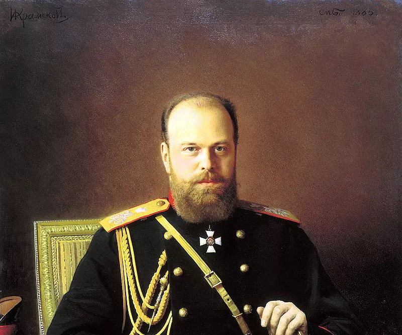

Życie Żydów w zaborze rosyjskim w XIX wieku

Źródło: domena publiczna
W XIX wieku Żydzi zamieszkujący ziemie polskie pod panowaniem rosyjskim doświadczali licznych ograniczeń i trudności. Wprowadzano różne przepisy mające na celu kontrolę i asymilację ludności żydowskiej, takie jak obowiązek służby wojskowej czy ograniczenia osiedleńcze.
Pomimo tych wyzwań, społeczność żydowska rozwijała swoje instytucje religijne, edukacyjne i kulturalne. W wielu miastach funkcjonowały synagogi, szkoły i organizacje społeczne, które podtrzymywały tradycje i wspierały członków społeczności.
Życie codzienne Żydów w zaborze rosyjskim było pełne wyzwań, ale także przejawów solidarności i dążenia do zachowania tożsamości w trudnych warunkach politycznych i społecznych.